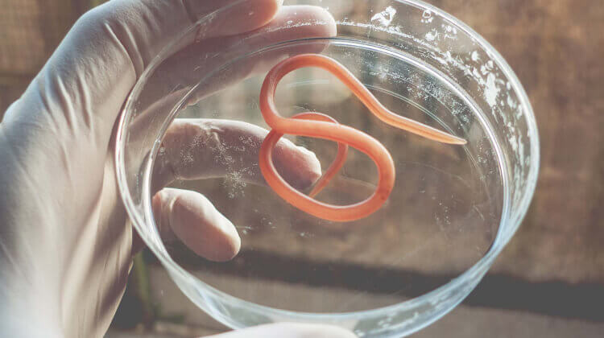
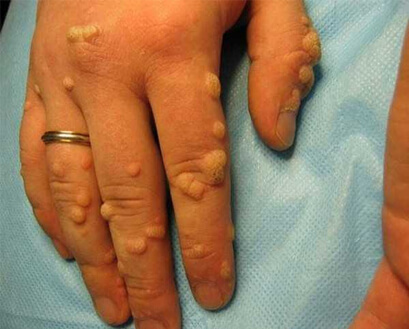

Selon les données de l'OMS, la fréquence des infections parasitaires a
augmenté de 17,6 % en 2019. Il est intéressant de noter que ces chiffres ne concernent pas
seulement les pays en développement, mais aussi l'Europe prospère.
Si les helminthiases sont si répandues, c'est parce que les patients
ne développent pas de symptômes à un stade précoce. Une personne infectée peut rester
inconsciente de son infection et infecter d'autres personnes.
Pourquoi les helminthes sont-ils dangereux?
Il existe plus de 360 types d'helminthes connus. La plupart d'entre
eux vivent dans des intestins ou le foie, mais certains peuvent se déplacer vers d'autres
organes et systèmes: poumons, cœur, système nerveux central, muscles, globes oculaires et
cerveau.
Les conséquences des infections parasitaires:
Développement de l'anémie, de l'avitaminose et de l'anorexie;
détérioration des tissus et des organes. Augmentation des
risques de développement d'infections et d'empoisonnement du sang;
Les pathologies du système nerveux. Les toxines des parasites
provoquent des insomnies, des migraines, de l'irritabilité, des dépressions
nerveuses, des crises cardiaques et des accidents vasculaires cérébraux.
Les réactions allergiques (éruption cutanée, démangeaisons,
fissures et blessures);
Le développement de papillomes qui peuvent causer le cancer;
Le retard de croissance chez les enfants, complications
dangereuses;
Elles peuvent provoquer l'impuissance chez les hommes;
Elles peuvent entraîner une baisse de la fertilité chez les
femmes.
Ne négligez pas le problème!

Comment peut-on être infecté par des parasites?
L'idée que l'on ne peut être infecté que par les aliments ou l'eau non
traitée est un stéréotype. Les parasites peuvent pénétrer dans votre corps à travers votre
peau. Par exemple, lorsque vous utilisez les transports publics ou des toilettes.
Les larves d’helminthes pénètrent dans vos capillaires par vos pores
et se répandent dans tout votre corps grâce au flux sanguin. Les gens ne ressentent pas ce
genre de piqûres, il est donc difficile de remarquer que vous avez été infecté. De plus, les
animaux et les insectes peuvent vous infecter lorsque vous inhalez des œufs d'helminthes
microscopiques avec de la poussière.
TOP 3 des méthodes pour lutter
contre les parasites
Régime antiparasitaire
- Veillez à la qualité des aliments que vous mangez: ne mangez pas de
légumes, de fruits et d'herbes non lavés, de viande non transformée (viande saignante), de
poisson cru (rouleaux de sushi, sashimi) et de lait cru.
- Mangez moins de sucre et de sucreries - elles stimulent le
développement de la microflore pathogène dans l'intestin.
N'oubliez pas les règles d'hygiène personnelle
Dans le monde moderne, il est difficile d'éviter de toucher les barres
de maintien dans les véhicules de transport public, d'utiliser la vaisselle dans les cafés
et d'utiliser les toilettes publiques. Il suffit de suivre des règles simples: se laver les
mains régulièrement et ne pas se toucher le visage.
Désintoxication
Pour éliminer les parasites et leurs toxines de votre corps, vous
devez suivre une cure de désintoxication avec un produit antiparasitaire - .
Ce produit est très efficace, il n'a pas de contre-indications ni
d'effets secondaires. Son effet vise à créer des conditions défavorables aux parasites, qui
leur feraient perdre tout intérêt pour la reproduction et les affaibliraient, et à faciliter
l'élimination des parasites de votre corps.
La formule de comprend des extraits de
plantes (extraits d'absinthe, de curcuma, de gotu kola, d'emblica officinalis et de
céleri) qui ont un puissant effet antiparasitaire:
Il paralyse les parasites;
Il stimule l'écoulement de la bile, ce qui aide à éliminer
les parasites immobilisés, leurs larves et leurs œufs;
Il restaure les tissus endommagés et la flore intestinale,
contribuant ainsi à améliorer votre immunité et à éliminer les fluctuations de
poids;
Il crée un environnement alcalin sain dans votre intestin,
vous protégeant ainsi contre les réinfections.
98% des personnes infectées se sont complètement débarrassées des parasites
89% des personnes ont signalé une amélioration générale de la santé
75% prennent à des fins de
prévention et sont satisfaits des résultats
Beaucoup de gens ignorent généralement qu'ils sont malades. Vous n'en
avez peut-être aucune idée, mais il est probable à 97-98% que des parasites vivent dans
votre corps. Leurs larves peuvent se trouver n'importe où: dans le sang, les intestins, les
poumons, la prostate, le cœur ou le cerveau.
Il est plus facile de devenir porteur de parasites plutôt que de
manger un hamburger. Il suffit de mal se laver les mains avant de prendre un repas,
d'embrasser une personne infectée et de jouer avec les animaux domestiques. Je vous
recommande de suivre un traitement à base de avant que les parasites ne causent des dommages irréparables.
Le fabricant propose le produit à un prix
spécial à nos lecteurs. Le nombre d'articles disponibles avec une réduction de 50 % est
limité.
P.S.
Pensez-vous que les parasites peuvent tuer quelqu'un d'autre que
vous? Répondez à une enquête express pour savoir si vous êtes infecté ou non:
Souffrez vous de troubles intestinaux?
Vous ne parvenez pas à vous débarrasser des cernes sous les yeux, des allergies et
des irritations cutanées?
Vous souffrez de douleurs musculaires et articulaires d'origine inconnue?
Vous souffrez de fatigue, de migraine ou d'insomnie?
Vous grincez des dents?
Vous perdez ou prenez du poids sans raison?
Même un seul "oui est une raison de s'inquiéter et de
commencer à prendre .
Parasitologue, infectiologue Expérience
professionnelle: 17 ans Co-auteur d'un manuel d'infectiologie
Commentaires sur l'article:
Victorine
C'est tellement affreux!!! Il s'avère que vous pouvez
vivre sans savoir qu'il y a des parasites dans votre corps! J'ai tellement peur
d'eux que je me lave les mains 30 fois par jour. Je vais certainement commander
ce produit. Merci beaucoup pour vos conseils!
Eh bien, nous menons une conversation intime, donc... Je
peux avouer que ma famille avait le même problème. Mais je connais depuis longtemps, ma sœur
l'utilisait. Nous avons donc commencé à en prendre immédiatement et notre état
de santé s'est rapidement amélioré. Je suis tout à fait d'accord avec l'auteur,
vous devez absolument prendre des mesures de prévention.
Ma chère, j'ai l'impression que vous n'avez jamais été
confrontée au problème des helminthes, c'est pourquoi vous dites cela. Vous
devez savoir qu'il est difficile de découvrir que vous êtes infecté. Certaines
personnes en ignorent l'existence pendant des années.
Vous savez, je suis tellement inquiète pour ma santé! Je
vois déjà que j'ai des symptômes. Je vais commander ce produit à titre préventif
tout de suite.
a également
sauvé ma famille. Mon fils a amené un chiot errant, mon mari et moi avons
accepté de le laisser entrer. Qui aurait cru que ce chiot apporterait autant de
problèmes. Mon mari a été le premier à en ressentir les symptômes. Mon fils a
été le suivant. Dès le début, j'ai compris que ce n'était pas seulement un
rhume. Nous avons fait des tests et nous avons découvert que nous étions
infectés par des parasites. Nous avons souffert pendant deux semaines en
essayant de nous en débarrasser à l'aide de méthodes folkloriques. C'est
absurde! Mais une fois que nous avons commencé à prendre ce produit anthelminthique, nous avons commencé
à nous sentir beaucoup mieux. Les vomissements et les ballonnements ont disparu
un jour plus tard. Une semaine après, nous avons subi de nouveaux tests et nous
avons découvert que nous étions en bonne santé.
C'est vrai, vous pouvez être infecté dans votre bureau ou
à la poste, vous pouvez être infecté lorsque vous utilisez les transports
publics, vous pouvez être infecté par la nourriture. Par exemple, mon mari aime
la viande saignante, c'est pourquoi nous n'arrêtons jamais d'utiliser des
produits antiparasitaires. Dieu aide ceux qui s'aident eux-mêmes. Je vais
commander pour notre famille
Je recommande à tous ceux qui ont des problèmes avec les
papillomes d'utiliser ce produit. Mes bras en étaient couverts jusqu'aux coudes.
J'avais tellement peur du cancer. Aucun traitement ne pouvait m'aider. Les
antibiotiques n'ont pas fonctionné. Les papillomes sont devenus plus petits,
mais ils sont réapparus et j'en ai trouvé sur mes pieds. J'ai vécu tant de
choses... Je ne souhaiterais pas ça à mon pire ennemi. J'ai passé 8 mois à la
maison, j'ai dû quitter mon travail et éviter de rencontrer mes proches parce
que je ne voulais pas les effrayer ou les infecter... C'était horrible. Dieu
merci, ce sont des choses du passé maintenant. J'ai eu la chance d'apprendre
l'existence de . J'ai pris le
médicament pendant trois semaines et j’ai constaté le résultat: de plus en plus
de papillomes disparaissaient jour après jour. Je m'en suis débarrassé, mais je
vais continuer à prendre ce produit à des fins de prévention. Je ne veux pas
revivre toutes ces choses.
est une bonne
chose, je peux le dire en tant que médecin. C'est dommage qu'il n'y ait qu'un
seul site où vous pouvez l'acheter! Je le recommande à beaucoup de mes patients
et je leur demande de l’acheter uniquement auprès du fournisseur officiel, mais
ils l'achètent partout où ils le trouvent et se plaignent ensuite qu'il n'a
aucun effet.
De nombreux types de parasites restent inconnus de la
science, mais les gens souffrent déjà de leurs effets. J'ai entendu dire qu'il y
a 19 types de parasites qui peuvent même vous tuer. Nous devrions les
neutraliser à l'aide de divers produits et antibiotiques.
Nous avons ramené un chat errant à la maison, nous
l'avons baigné, nous ne le laissions pas dormir sur notre lit ou notre canapé.
Mais nous avons oublié de faire des tests antiparasitaires, ce qui a eu pour
conséquence de nous infecter. Nous avons tellement souffert, nous avons eu des
éruptions cutanées et nous nous sentions malades. Les antibiotiques ne
fonctionnent pas. Je vais commander ce produit.
Les antibiotiques n'aident pas à se débarrasser des
parasites ou des helminthes, ce sont des traitements à large spectre. Dans ce
cas, vous avez besoin d'un produit conçu pour cibler les parasites, un produit
qui supprime leur activité. Par exemple, vous pouvez utiliser ce . Les produits antiparasitaires ne
font que décomposer ces créatures et elles sont évacuées naturellement.
Merci, quant aux antibiotiques, c'est déjà clair.
Mon médecin dit que les antibiotiques n'ont pas la moindre influence sur
les parasites, ils ne font qu'endommager votre flore et même aider les
parasites à se multiplier.
Bonjour, chers lecteurs. Je suis heureux de trouver sur
Internet quelque chose qui confirme ma pensée. Mon mari a commencé à se plaindre
de diarrhées et de maux de tête, lui aussi. Je pensais que c'était une
intoxication, mais aucune pilule ne pouvait l'aider. Les symptômes n'ont pas
disparu. J'ai aussi remarqué que l'endurance sexuelle de mon mari n'était plus
aussi bonne. En fait, c'était bien pire. C'est alors que je suis tombée sur cet
article. J'ai commandé ce produit antiparasitaire - - immédiatement et, le quatrième
jour, mon mari a dit que les symptômes avaient disparu. Vivement recommandé.

Commentaires sur l'article:
Victorine
C'est tellement affreux!!! Il s'avère que vous pouvez vivre sans savoir qu'il y a des parasites dans votre corps! J'ai tellement peur d'eux que je me lave les mains 30 fois par jour. Je vais certainement commander ce produit. Merci beaucoup pour vos conseils!
RépondreCarine
Eh bien, nous menons une conversation intime, donc... Je peux avouer que ma famille avait le même problème. Mais je connais depuis longtemps, ma sœur l'utilisait. Nous avons donc commencé à en prendre immédiatement et notre état de santé s'est rapidement amélioré. Je suis tout à fait d'accord avec l'auteur, vous devez absolument prendre des mesures de prévention.
RépondreSolange
Vous devriez simplement vous laver les mains!
RépondreAnne
Ma chère, j'ai l'impression que vous n'avez jamais été confrontée au problème des helminthes, c'est pourquoi vous dites cela. Vous devez savoir qu'il est difficile de découvrir que vous êtes infecté. Certaines personnes en ignorent l'existence pendant des années.
RépondreAlice
Vous savez, je suis tellement inquiète pour ma santé! Je vois déjà que j'ai des symptômes. Je vais commander ce produit à titre préventif tout de suite.
RépondreNathalie
a également sauvé ma famille. Mon fils a amené un chiot errant, mon mari et moi avons accepté de le laisser entrer. Qui aurait cru que ce chiot apporterait autant de problèmes. Mon mari a été le premier à en ressentir les symptômes. Mon fils a été le suivant. Dès le début, j'ai compris que ce n'était pas seulement un rhume. Nous avons fait des tests et nous avons découvert que nous étions infectés par des parasites. Nous avons souffert pendant deux semaines en essayant de nous en débarrasser à l'aide de méthodes folkloriques. C'est absurde! Mais une fois que nous avons commencé à prendre ce produit anthelminthique, nous avons commencé à nous sentir beaucoup mieux. Les vomissements et les ballonnements ont disparu un jour plus tard. Une semaine après, nous avons subi de nouveaux tests et nous avons découvert que nous étions en bonne santé.
RépondreMlle X
Pourquoi poster des articles de ce genre?
Répondrepauline
Ce qui est naturel n'est pas souillé!
RépondreAlexis
J'ai eu un grand nombre de chats depuis mon enfance, mais pas d'helminthes pour autant.
RépondreMonique
C'est vrai, vous pouvez être infecté dans votre bureau ou à la poste, vous pouvez être infecté lorsque vous utilisez les transports publics, vous pouvez être infecté par la nourriture. Par exemple, mon mari aime la viande saignante, c'est pourquoi nous n'arrêtons jamais d'utiliser des produits antiparasitaires. Dieu aide ceux qui s'aident eux-mêmes. Je vais commander pour notre famille
RépondreIsabelle
Je recommande à tous ceux qui ont des problèmes avec les papillomes d'utiliser ce produit. Mes bras en étaient couverts jusqu'aux coudes. J'avais tellement peur du cancer. Aucun traitement ne pouvait m'aider. Les antibiotiques n'ont pas fonctionné. Les papillomes sont devenus plus petits, mais ils sont réapparus et j'en ai trouvé sur mes pieds. J'ai vécu tant de choses... Je ne souhaiterais pas ça à mon pire ennemi. J'ai passé 8 mois à la maison, j'ai dû quitter mon travail et éviter de rencontrer mes proches parce que je ne voulais pas les effrayer ou les infecter... C'était horrible. Dieu merci, ce sont des choses du passé maintenant. J'ai eu la chance d'apprendre l'existence de . J'ai pris le médicament pendant trois semaines et j’ai constaté le résultat: de plus en plus de papillomes disparaissaient jour après jour. Je m'en suis débarrassé, mais je vais continuer à prendre ce produit à des fins de prévention. Je ne veux pas revivre toutes ces choses.
 RépondreCatherine
Cela semble si terrible! Bonne chance, restez en bonne santé!
RépondreAlain
Pourquoi poster des choses aussi méchantes? Imbécile, je ne pourrai pas dormir
RépondreGeorge
est une bonne chose, je peux le dire en tant que médecin. C'est dommage qu'il n'y ait qu'un seul site où vous pouvez l'acheter! Je le recommande à beaucoup de mes patients et je leur demande de l’acheter uniquement auprès du fournisseur officiel, mais ils l'achètent partout où ils le trouvent et se plaignent ensuite qu'il n'a aucun effet.
RépondreLa petite amie de paul
Reçu, je vais commencer à l'utiliser
RépondreRémi
De nombreux types de parasites restent inconnus de la science, mais les gens souffrent déjà de leurs effets. J'ai entendu dire qu'il y a 19 types de parasites qui peuvent même vous tuer. Nous devrions les neutraliser à l'aide de divers produits et antibiotiques.
RépondreSarah
Nous avons ramené un chat errant à la maison, nous l'avons baigné, nous ne le laissions pas dormir sur notre lit ou notre canapé. Mais nous avons oublié de faire des tests antiparasitaires, ce qui a eu pour conséquence de nous infecter. Nous avons tellement souffert, nous avons eu des éruptions cutanées et nous nous sentions malades. Les antibiotiques ne fonctionnent pas. Je vais commander ce produit.
RépondreDr. Michel
Les antibiotiques n'aident pas à se débarrasser des parasites ou des helminthes, ce sont des traitements à large spectre. Dans ce cas, vous avez besoin d'un produit conçu pour cibler les parasites, un produit qui supprime leur activité. Par exemple, vous pouvez utiliser ce . Les produits antiparasitaires ne font que décomposer ces créatures et elles sont évacuées naturellement.
RépondreOlive Blanche
Merci, quant aux antibiotiques, c'est déjà clair. Mon médecin dit que les antibiotiques n'ont pas la moindre influence sur les parasites, ils ne font qu'endommager votre flore et même aider les parasites à se multiplier.
RépondreVincent
Pourquoi s'empoisonner avec des antibiotiques et de la chimiothérapie si on peut choisir un produit dont la formule est naturelle. C'est stupide...
Répondrehermine
Bonjour, chers lecteurs. Je suis heureux de trouver sur Internet quelque chose qui confirme ma pensée. Mon mari a commencé à se plaindre de diarrhées et de maux de tête, lui aussi. Je pensais que c'était une intoxication, mais aucune pilule ne pouvait l'aider. Les symptômes n'ont pas disparu. J'ai aussi remarqué que l'endurance sexuelle de mon mari n'était plus aussi bonne. En fait, c'était bien pire. C'est alors que je suis tombée sur cet article. J'ai commandé ce produit antiparasitaire - - immédiatement et, le quatrième jour, mon mari a dit que les symptômes avaient disparu. Vivement recommandé.
Répondreserge
Merci pour l'info! Je ferais mieux de suivre un traitement pour rester en sécurité. Cela ne fera pas de mal.
Répondre